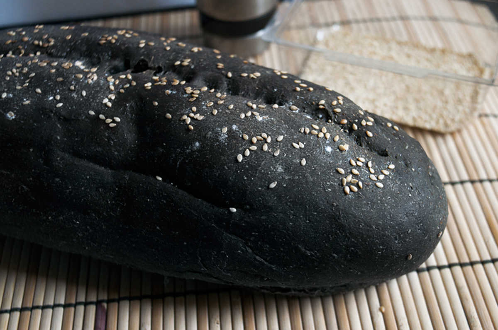

basic black bread
1 loaf — 140 minutes
This bread is super light and fluffy and great for morning toast or sandwiches.
We've been reading up a lot about bread, we wanted to understand how the ingredients we add can affect the texture. We also read about the differences in temperature, to knead or not to knead etc. Truth is, every choice depends on the desired end result.
We wanted to make a sandwich bread with a light crumb, the kind that bounces back when touched. This recipe has more fat, which in turn makes it softer and fluffier. The choice of fat will affect the texture/taste of the bread.
There are many things you can do to help soften your bread, like brushing the outside with a oil or some other fat as soon as we take it out of the oven. Brushing fat on the outside softens the crust.
Substitutions
It's possible to substitute nut milk for water, for a richer taste.
Burger buns: Repeat steps 1 to 6 in the recipe below. Instead of forming into a 'cigar' shape at step 7,divide into 8 pieces and shape into a tight ball. Sprinkle baking sheet with some cornmeal and put buns on top. Cover and let rise for another 45 minutes in the warmed oven. Take buns out of oven, brush lightly with 15 ml (1 tbsp) of coconut oil (for browning) and put white sesame seeds on top. Bake uncovered for 20 minutes at 180 °C (350 °F). Let cool on a pile of towels or cooling rack.
Hot dog buns: Repeat steps 1 to 6. Divide through into 15 pieces and shape into small cylinders (or general elongated hot dog shape). Sprinkle baking sheet with some cornmeal and put buns on top. Cover and let rise for another 45 minutes in the warmed oven. Take buns out of oven, brush lightly with coconut oil. Bake uncovered for 20 minutes< at 180 °C (350 °F). Let cool on a pile of towels or cooling rack.
 maple syrup15 ml
maple syrup15 ml water240 ml, warm
water240 ml, warm active dry yeast5 g
active dry yeast5 g olive oil15 ml
olive oil15 ml all purpose flour180 g
all purpose flour180 g whole wheat flour180 g
whole wheat flour180 g bamboo charcoal powder5 g
bamboo charcoal powder5 g salt1.25 g
salt1.25 g white sesame seeds5 g
white sesame seeds5 g corn semolina15 g
corn semolina15 g coconut oil15 ml
coconut oil15 ml
bread
- In a large bowl, stir 15 ml (1 tbsp) of maple syrup in 240 ml (1 cup) of warm water until dissolved. Sprinkle 5 g (1 tsp) of active dry yeast, let sit for 10 minutes.
- Sift 180 g (1 1/2 cups) of all purpose flour, 180 g (1 1/2 cups) of whole grain flour, 1.25 g (1/4 tsp) of salt and 5 g (1 tsp) of bamboo charcoal powder together in a separate bowl. Once flours are mixed evenly enough.
- Add 15 ml (1 tbsp) of olive oil to the water mix, then stir in 60 g (1/2 cup) of the flour mix with a wooden spoon. Keep adding flour a 60 g (1/2 cup) at a time, until the dough stops sticking to the sides.
- Put ball of dough on lightly floured counter-top and start kneading, add a bit of flour everytime it starts to stick to your hands. Knead for 15 minutes. You may not use up all of your flour, if there's still a lot left and your dough is nice smooth don't add any more. Don't want to risk drying it out.
- Heat up oven at the very lowest setting. This will be our warm place for bread rising.
- Grease up a bowl and put the dough, rolling it once to cover all sides. Cover with a cloth and place in oven. Let rise for 45 minutes.
- Your bread should have doubled in size. Take bread out of oven, knead a few times and shape into a 25-28 cm cigar-shape. Sprinkle some corn semolina on a baking sheet and place bread on top - this will keep it from sticking. Slash the top of the bread in the middle with a knife, doing this will keep the ends of the bread from splitting. Mist top of bread lightly with water, then add white sesame seeds. Press lightly to make them stick. Cover loaf with a cloth, put back in oven to rise for an additional 45 minutes. If you don't want a traditional bread shape, put bread in a greased loaf pan to rise.
- Turn oven up to 180 °C (350 °F) . Bake for 30 minutes, or until it sounds hollow when tapped at the bottom.
- Brush sides lightly with coconut oil, then let cool on a pile of towels or a cooling rack.